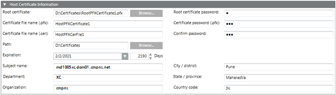

Host Certificate Information Expander (.pfx)
When you click Create Certificate > Create Host Certificate (.pfx), the Host Certificate Information expander displays. This allows you to create a .pfx host certificate. Note that this creates two host certificates; one with the extension .pfx and another with the extension .cer, at the specified location on the disk.
In order to create a .pfx host certificate, you must have a .pfx root certificate. You can create multiple host certificates using one .pfx root certificate.

Host Certificate Information Expander | |
| Description |
Root certificate | Browse for the .pfx root certificate. By default, the last created .pfx root certificate is selected. |
Root certificate password | Type the password for the selected root certificate. |
Certificate file name (.pfx) | Type the .pfx file name of the host certificate. |
Certificate password (.pfx) | Type the valid password for the certificate. |
Confirm password | Re-enter the certificate password. |
Certificate file name (.cer) | Type the .cer file name of the host certificate. |
Path | Browse for the location to store the certificate on the disk. By default, the path of the last created root certificate is selected. |
Expiration | Set the validity period for the host certificate. Once a certificate's validity period is over, a new certificate must be requested by the subject of the now-expired certificate. By default, the certificate expires after 2190 days. |
Subject Identifier Information | Provide the subject's identifier information: |